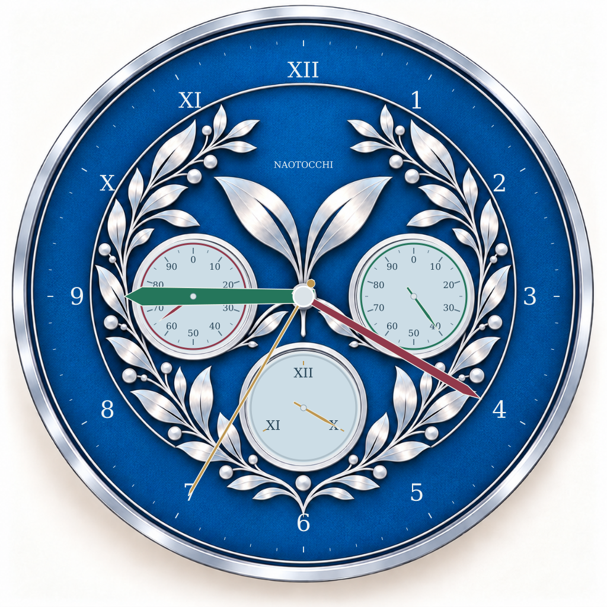
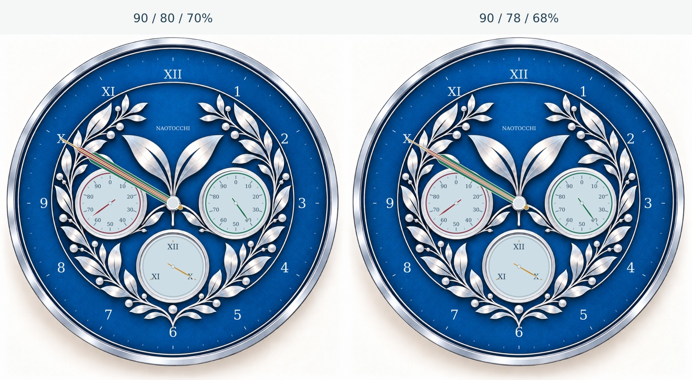
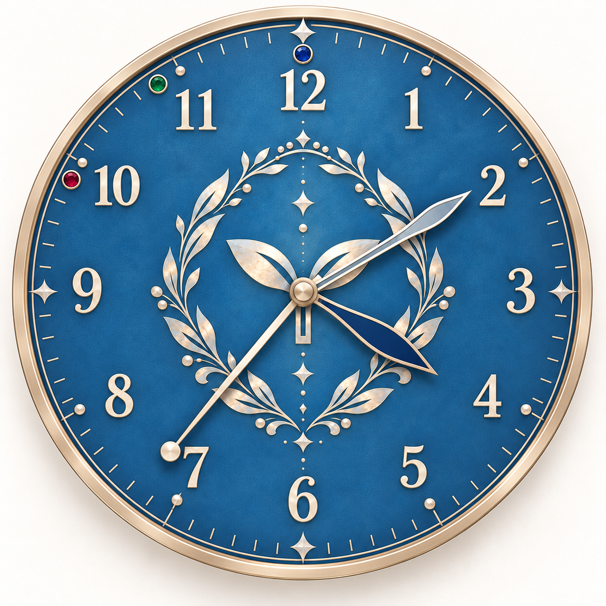
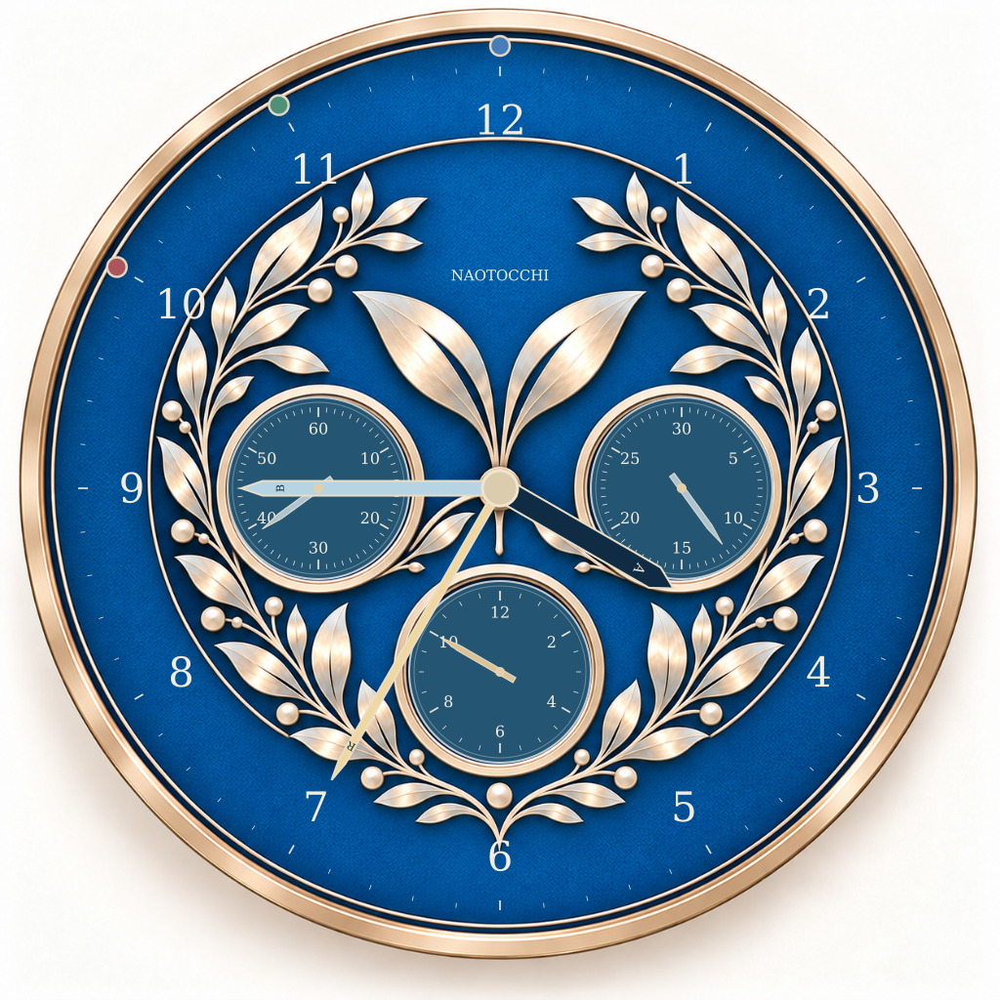
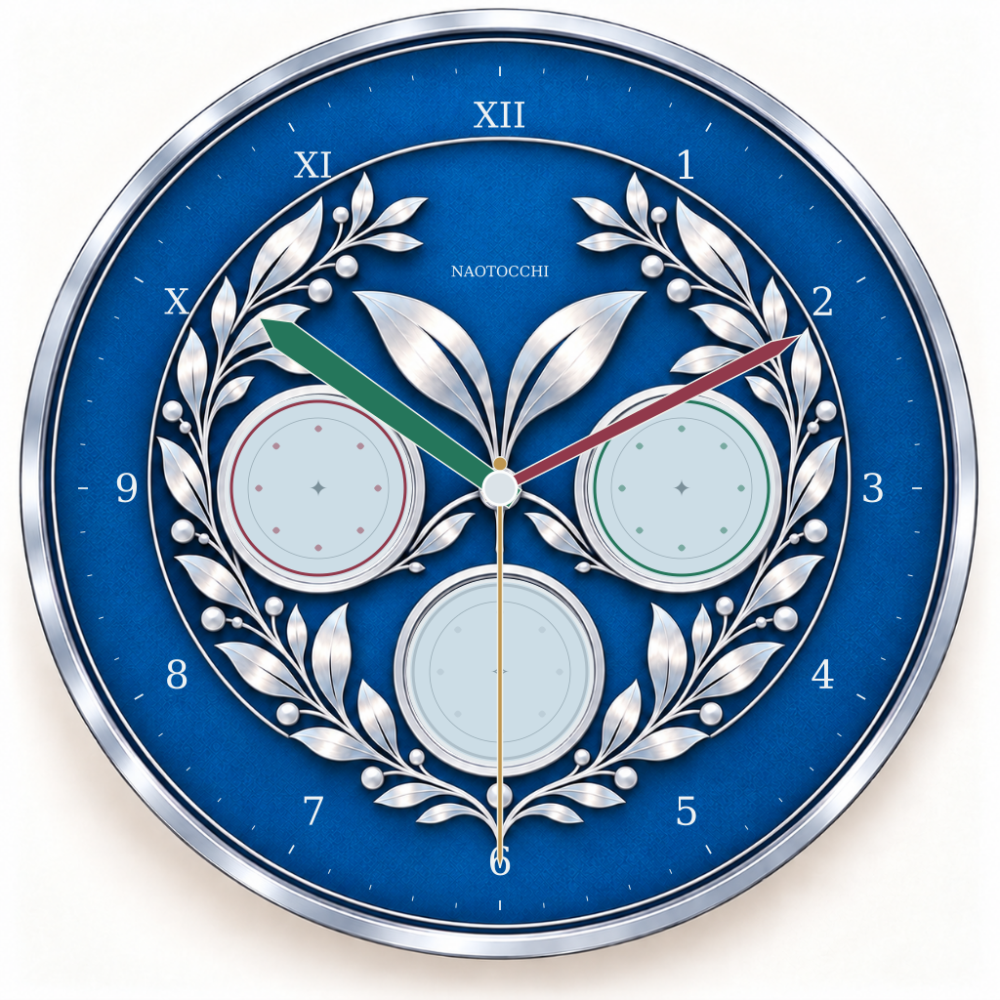

C1 · 控えめな色分け
3面とも淡い青銀。左は深紅、右は翡翠緑のリング。下は銀のリングと金の針で整えました。
C1を拡大 ↗GAME EDITION / TRI-COMPAX
中央に「時」。左右に「そだち」。
下中央に、人生の終点。
青銀の文字盤と、小さな双葉。
カードの裏面から受け継ぐ、なおとっちの時計。
B配置を基準とする本人限定候補 · 正式採用前

01 / TWO QUIET PALETTES
形・目盛り・針の条件は同一。色を添える範囲だけを比べます。
02 / SIX INDEPENDENT HANDS
値は両配色で共通です。針の位置と数値を見比べてください。
第一候補はマーカーなし。中央は1〜9・X・XI・XIIです。
これは物理時計の表示・操作検討です。カード対戦には接続しません。現在ラウンド0は準備位置、11・12は拡張表示試験。正式ゲームは10ラウンド・そだち100のままです。残り時0と12も同じ上向きになるため、数値を併記します。
| 針 | 値 | 角度 | 目盛り位置 |
|---|
03 / THE BALANCE OF THREE HANDS
金は秒針型で最長・細身。深紅は分針型で中間の長さ、翡翠緑は時針型で短く太く。文字盤側から緑→赤→金の順で重ね、緑の先端両肩・赤の先端両側・金の針先を見分けます。完全同方向では下の針の先端中央は隠れるため、幅の差を確かめてください。

比率の基準は中央の外周目盛り半径。実物の軸高さ・針のたわみ・隙間は未検証です。
OVERLAP STUDY
上の操作欄で配色・針の比率を変えると、この6条件も同時に切り替わります。針が双葉や目盛りを横切る遮蔽は残ります。物理的な接触・反射は実物試作で確認します。
04 / GROWTH, IN TWENTY STEPS
左右は同径・同じ20等分。数字は0〜90を10刻み、間の短目盛りは5刻み。1回の5増加で18°進むので、中間に針を置く必要はありません。
100に達したときだけ小さな「100」窓が現れます。0は同じ上向きでも窓が出ません。画面では値で切り替えますが、実物の窓は20回目を記憶するラッチや終端機構が必要で、未試作です。
100到達と55の拡大画像 ↗05 / THE END OF THIS JOURNEY
右下に X。左下に XI。
真上に XII。
120度ずつの三択ダイヤルです。通常は金の針がXを指します。中央文字盤の10・11・12の角度とは異なります。
XI・XIIは未正式採用の延長候補。PR #498で検証中の拡張を見据えた表示であり、正式ルールの変更ではありません。
終了ダイヤルを拡大 ↗06 / PRESERVING THE ORIGINAL



銀葉は小文字盤の周囲に残し、双葉を中央上部に保ちました。金属枠を銀色へ統一し、情報は目盛りと針で整理しています。中央針が葉や小文字盤を横切る瞬間はあります。
07 / ANOTHER EDITION

中央は通常の時・分・秒を表示。この参考案では、小文字盤を針のない装飾メダリオンとして残しました。そだちや終了ラウンドを表示する機能はありません。
既製ムーブメントを前提に、軸長・針穴・針の重量を合わせて設計します。ゲーム用独立6針を無理に共用しません。
通常時計の参考画像 ↗08 / FROM IMAGE TO OBJECT
中央は3本の同軸スリーブ、小文字盤は各独立軸。中心付近の3段つまみと小ダイヤルのつまみで操作し、葉飾りを直接こすらない構造を検討します。透明保護層、針の高さ、指の入る隙間が課題です。
中央は30°、そだちは18°、終了ダイヤルは120°のクリック候補。20クリックの円板だけでは0と100を区別できないため、周回記憶と終端機構を別途検討します。
卓上直径260mmを初期案とし、240／280mmも検討。針の保持力、連れ回り、反射、軸のガタ、クリック耐久は未試作です。外観だけで製造可能とは判断していません。
独立6針・金属枠の価格は未見積り。特注軸・保持機構・100窓・組立費を分けて見積もる必要があります。
一次資料：MYDOO通常時計の印刷・価格 / SEIKO法人向けムーブメント（機構検討用参考リンク。本試作の適合・価格は未確認）
YOUR NEXT CHOICE
青銀の一体感を保ち、赤と緑は役割の手がかりに。
C2の分かりやすさとも見比べてください。
確認したいのは、配色、中央針のバランス、
そだちの数字の読みやすさ、100窓の控えめさです。
本人のiPhone Safari評価後に判断。正式採用・mainマージ・本番Pages公開は行いません。